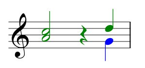

Cuando la partitura presenta varios instrumentos/voces en un mismo pentagrama, a veces es necesario "empujar" algunos de estos eventos, como las notas, a una posición posterior en el compás sin indicar silencios. Esto suele ocurrir cuando el documento a codificar cambia de la notación basada en acordes a las plicas separadas en un mismo compás (consultar la figura de abajo). Dado que MEI utiliza el elemento <layer> para codificar las distintas capas/instrumentos/voces en una partitura y que, en el ejemplo mostrado en la siguiente figura, un instrumento cambia de capa a medio compás, los "agujeros" en dicho compás necesitan rellenarse. Para esto se utiliza el elemento <space>.

Obviamente, un espacio no es en realidad un silencio. Sin embargo, los silencios (invisibles) se (ab)usan para tales fines en otros formatos de codificación o editores de partituras. El elemento <space> de MEI tiene el beneficio de que no tiene ningún significado semántico, simplemente va empujando los otros elementos que le siguen. Esto hace que el procesamiento de la partitura codificada y la extracción de sus voces individuales sea mucho más sencilla, ya que la codificación no hace uso de ningún elemento con información falsa solo para una mejor coordinación de las voces.
No obstante, se puede aplicar cierta duración al elemento <space> utilizando el atributo @dur. Incluso se puede utilizar @dots para extender esa duración a la mitad de su valor. La duración codificada en <space> es el número de pulsaciones por las cuales los elementos que le siguen (como elementos <note>) son desplazados a la derecha.
En el editor de abajo, se ve la codificación de una nota Sol4 (posicionada en el primer tiempo de la segunda capa). Por favor, empuja esta nota hasta el final del compás, de manera que se sitúe en el último tiempo bajo el Re5, como en la imagen de arriba. Para esto, utiliza el elemento <space> y aplica la duración adecuada (en total deben ser 3 tiempos). Hay varias maneras de codificarlo:
<space> que utilicen el mismo valor para @dur,<space> que utilicen solo @dur, pero con dos valores diferentes,<space> que utilice tanto @dur como @dots.Puedes jugar un poco con los valores de los atributos para ver cómo influyen en la renderización. ¿Has encontrado las tres posibles soluciones?